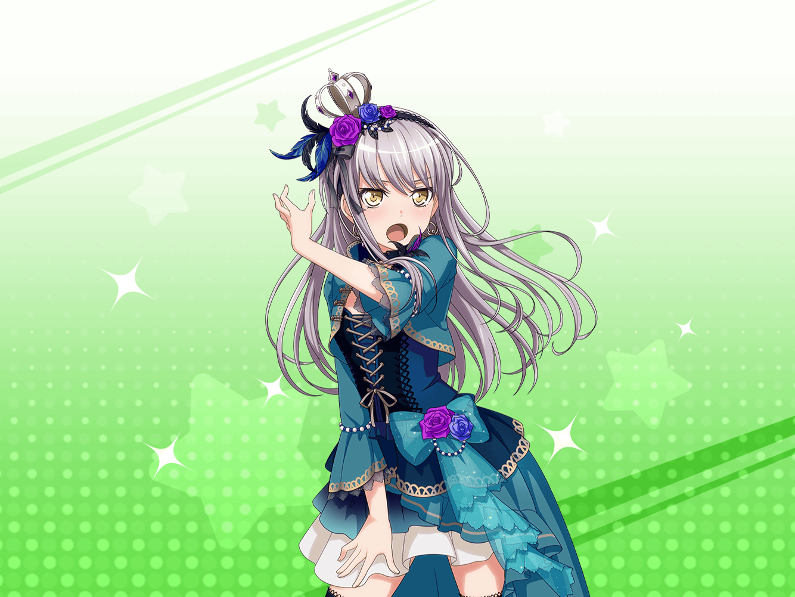

スタジオ
友希那
なるほど……
こういうドレスの雰囲気も悪くないわね……
友希那
ただ……
Roseliaのイメージからは離れている気もするわ……
友希那
もう少し私達のバンドの雰囲気に
合った服はないかしら……？
リサ
ゆーきな☆
なに読んでるの？
友希那
……っ！ リサ……びっくりした……
リサ
あはは、ごめんね、ビックリさせちゃって！
けど、すっごい真剣な顔して雑誌を見てたから
リサ
なんの雑誌読んでたの？
やっぱり音楽雑誌？
友希那
違うわ……
これよ
リサ
……え？ 友希那がファッション雑誌？
珍しいね……
友希那
リサ……
私だって、ファッション雑誌くらい読むわよ
リサ
それは知ってるけど、あまりにも真剣だったからさ
友希那
だって、バンドの新衣装のことを考えていたのだから、
真剣にならざるを得ないでしょ？
リサ
なるほど、そのことを考えてたんだ？
友希那
その参考にしようと思って、買って来たの
リサ
それなら真剣になって当然だね
リサ
ねねっ！
せっかくだから一緒に見ようよ
友希那
べ、別に、一緒に見なくたって……
あとで、貸すわよ？
リサ
そんな冷たいこと言わないで、
いいじゃんいいじゃん、一緒に見よ☆
友希那
仕方ないわね……
リサ
やたー！
友希那
……ちょっと近づきすぎじゃない？
リサ
気にしない気にしない！
うわ～、いろんなドレスが載ってるね！
ちなみに友希那のイメージは？
友希那
それがなかなか決まらないから、
こうやって悩んでいるんじゃない
リサ
そっか。
……あ！
アタシは、こんな感じのドレス１回着てみたいかな？
友希那
……このゴールドのドレス？
リサ
なんかエレガントな感じするでしょ？
スパンコールの感じとかもすっごいいいし
リサ
友希那も意外とゴールドとか、似合うと思うよ♪
友希那
ゴールドは……遠慮するわ……
リサ
ダメ？
友希那
ダメというか、Roseliaにゴールドのイメージが
あまりないから……
リサ
そっか……
そう言われたらゴールドは攻めすぎかもね
リサ
けど、こういうドレスの雰囲気、
アタシは好きなんだけどなー
友希那
確かに、色合いは少し考えないといけないけれど、
ドレスの雰囲気自体は、
私もわりと好きな部類かもしれないわね
リサ
ほ、ホントに！？
友希那
ええ。
なら、そのドレスと似た雰囲気の物を、
もう少し探してみましょうか？
リサ
うんうん、それ賛成！
友希那
……次のページにいっていいかしら？
リサ
はーい、お願いしまーす♪